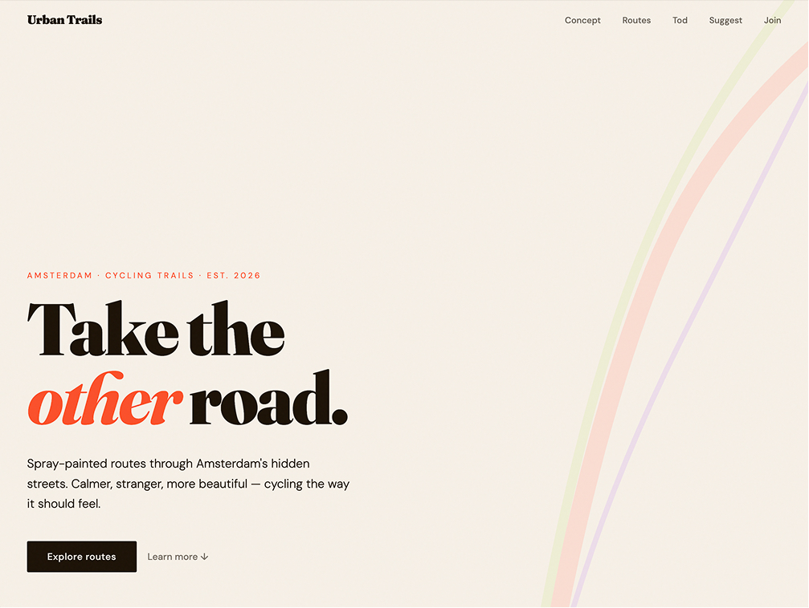
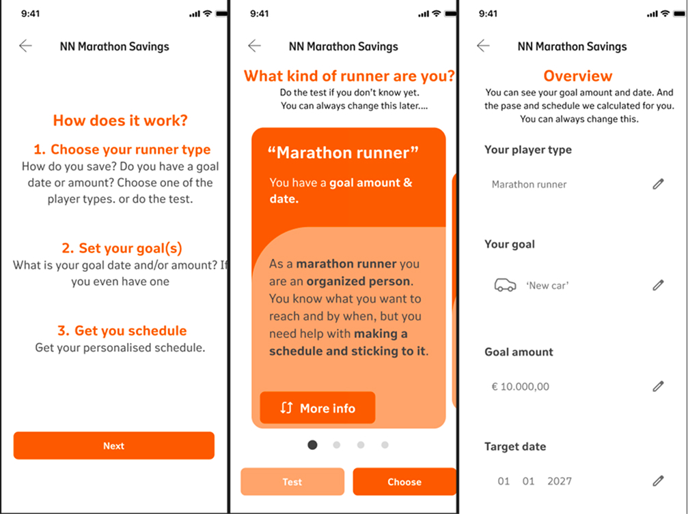
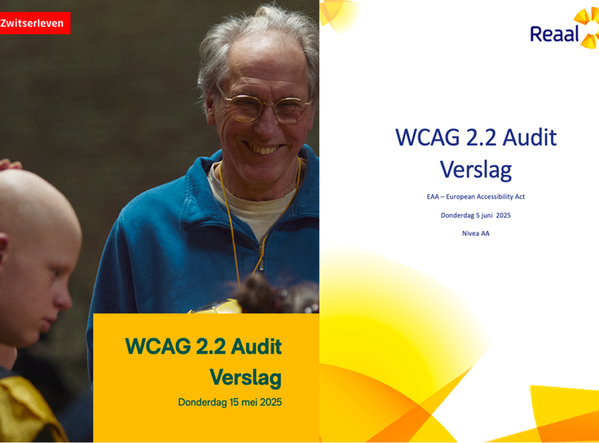
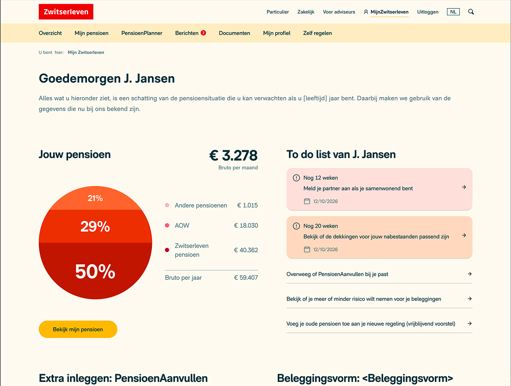

Design for
everyone.
I'm a UX designer focused on creating accessible, user centered digital experiences. I combine research, thoughtful design, and front end development to build products that are intuitive, inclusive, and enjoyable to use.
Selected work

The Line
The Line is an urban interaction project that encourages people to step outside their daily routines and explore their city. Through playful interventions and a community driven platform, the project inspires people to discover new routes and experience familiar places from a different perspective.
View case study →
Marathon Savings
During the User Experience Design minor at HvA, I designed Marathon Savings, a gamified saving feature for the Nationale Nederlanden app inspired by the Rotterdam Marathon. The concept encourages users to save at their own pace through four saver types based on a target amount and target date.
View case study →
European Accessibility Act (EAA)
During my internship at Athora, I conducted accessibility audits for websites, mobile apps, and PDFs in preparation for the European Accessibility Act (EAA). I created reports, helped organize accessibility workshops, and collaborated with the UX team to implement accessible solutions.
View case study →
Zwitserleven Redesign
During my internship at Athora, I helped redesign the Zwitserleven website using a new design system. I designed pages, contributed to the design system in Figma, and collaborated with UX designers, developers, copywriters, and legal stakeholders.
View case study →About
I'm Joep Groenteman (He/Him), a fourth year Communication and Multimedia Design student at the HvA with a strong interest in UX design, accessibility, and digital products. I enjoy exploring how people interact with both digital and physical environments.
Through my studies and internships, I developed a passion for creating accessible experiences, believing that digital products should be usable by everyone, regardless of their abilities or circumstances.
I enjoy solving complex problems through research, prototyping, and user centered design, always looking for ways to make products more intuitive, inclusive, and meaningful.
I'm naturally curious and enjoy learning new skills. Every project is an opportunity to challenge myself, collaborate with others, and create experiences that have a real impact.
- Hard skills
- FigmaAuto layout, design & prototyping
- AccessibilityEAA, screen readers & testing
- Other toolsCanva
- Soft skills
- IdeationCreative ideation & project development
- CollaborationCross-team, multiple stakeholders
- Critical thinkingChallenging assumptions & bias
Contact
Design for everyone.
joep.groenteman@gmail.com